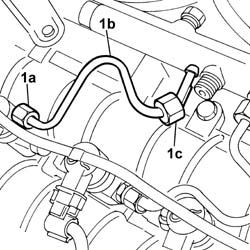
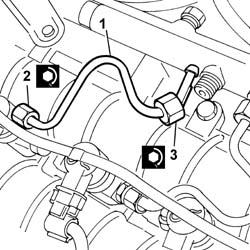

1060F34 PIPE from fuel MANIFOLD to INJEJCTOR - R.R.
- Path
- Procedures > 10 ENGINE > 1060 DIESEL FUEL INJECTION SYSTEM > 1060F INJECTORS AND LINES > 1060F34 PIPE from fuel MANIFOLD to INJEJCTOR - R.R.
- Kind
- repair procedure (removal / refitting; the operation number is the code)
- Applies to
- engines: 2.4 JTD 20V; all production periods
- Interactive page
- https://sloeber94.github.io/elrnDB-lThss/en/#/850537
Applies to: engines: 2.4 JTD 20V; all production periods
 Removing
Removing
 Refitting
RefittingSee in Op. 1016A10 SOUND-PROOFING COVER - R.R.
1. Undo connectors (1a) and (1b) and remove the pipes from fuel manifold to injectors (1c).

Applies to: engines: 2.4 JTD 20V; all production periods
Refitting
Removing1. Fit new pipes from the fuel manifold to the injectors and secure with connectors without tightening.
2. Tighten the connectors for the pipes from the fuel manifold to the injector side injectors to the recommended torque using an appropriate commercial wrench.
 | Value - daNm | Fastening | Component | Ø |
|---|---|---|---|---|
2 | (injector side) 2 | Connectors | INJECTOR FUEL MANIFOLD PIPE | M12X1.5 |
3. Tighten the connectors for the pipes from the fuel manifold to the fuel manifold side injectors to the recommended torque using an appropriate commercial wrench.
| Value - daNm | Fastening | Component | Ø |
|---|---|---|---|---|
3 | (manifold side) 2 | Connectors | PIPE FUEL MANIFOLD TO INJECTORS | M12X1.5 |

Applies to: engines: 2.4 JTD 20V; all production periods